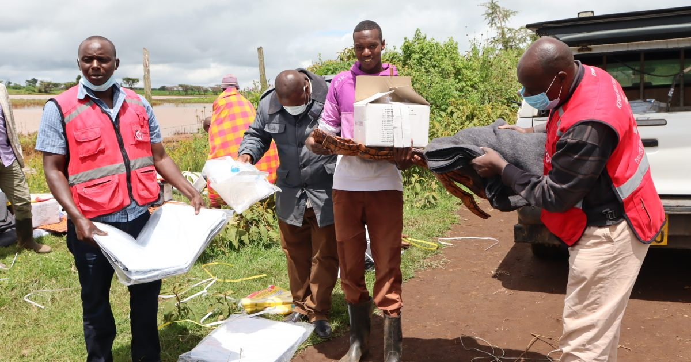
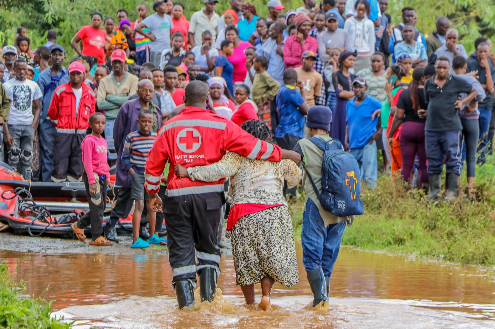
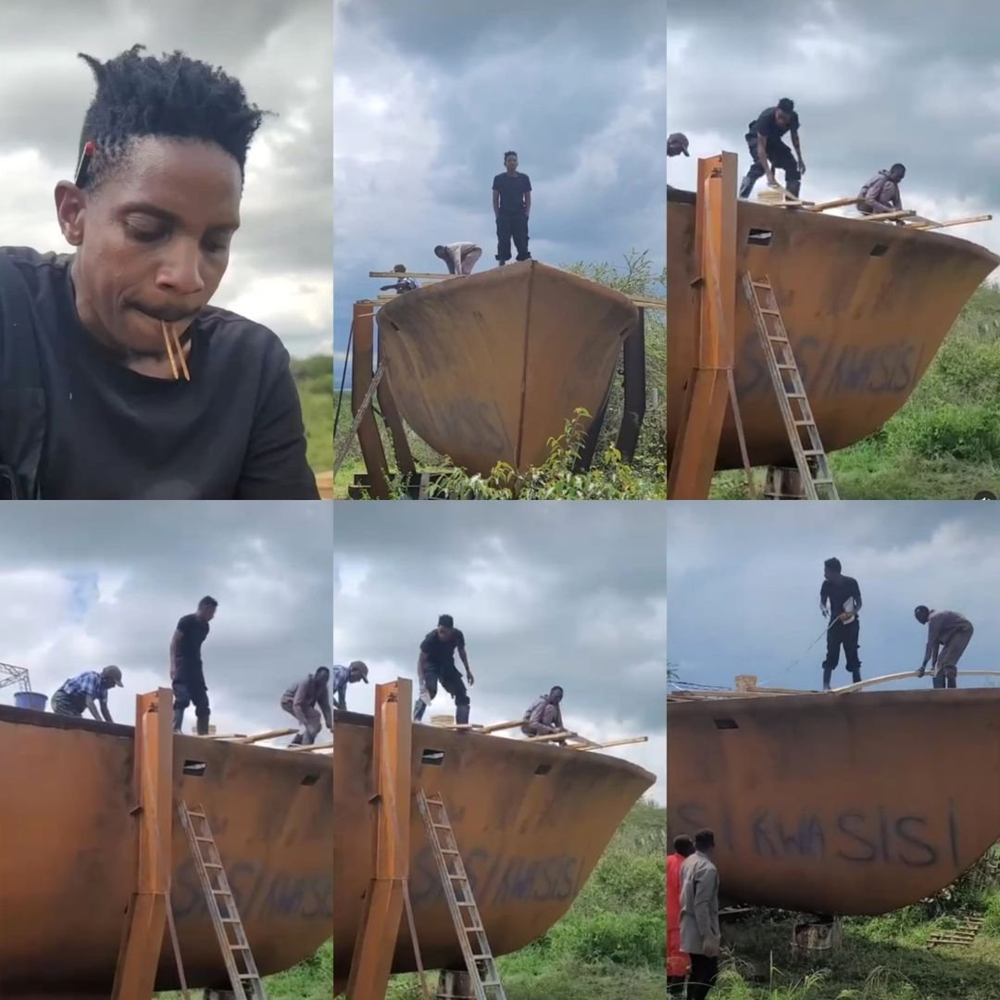
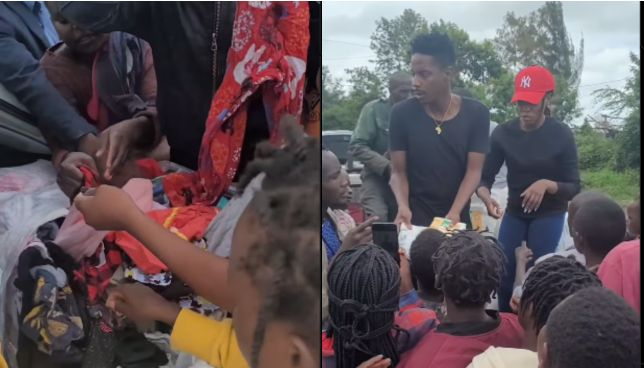

Help fund us
AID
Amidst the chaos, humanitarian agencies have been working tirelessly to provide aid to those affected by the floods.
Organizations such as the Red Cross and Médecins Sans Frontières (Doctors Without Borders) have been on the ground,
offering emergency assistance including shelter, food, clean water, and medical care to displaced families.
However, the scale of the crisis presents significant challenges, testing the limits of resources and logistics.

Red cross members helping the affected with clothes

Red cross members helping those lost in floods
Local Aid
Other local residents decided to help the affected by donating to them what they had.
One of the local resident,Eric Omondi decided to build an ark to help people cross the
flooded roads through the SISI KWA SISI inicitive.They also helped thousands of Kenyans who where affected
with money and clothing

An ark build by sisi kwa sisi team

Sisi kwa sisi team donating to those affected